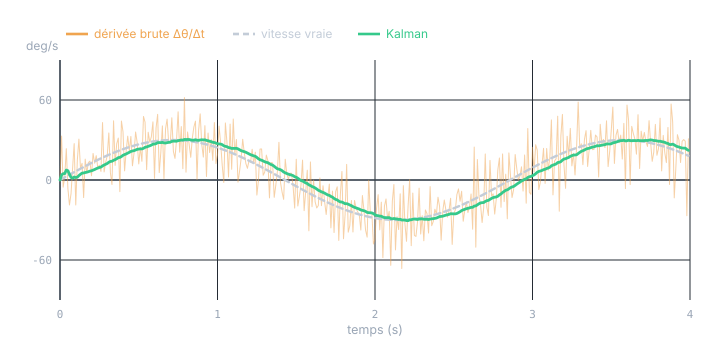
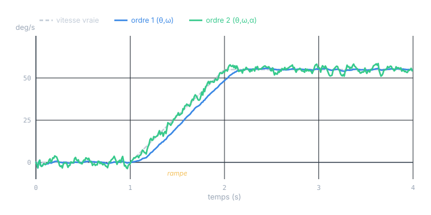
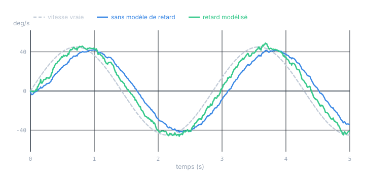
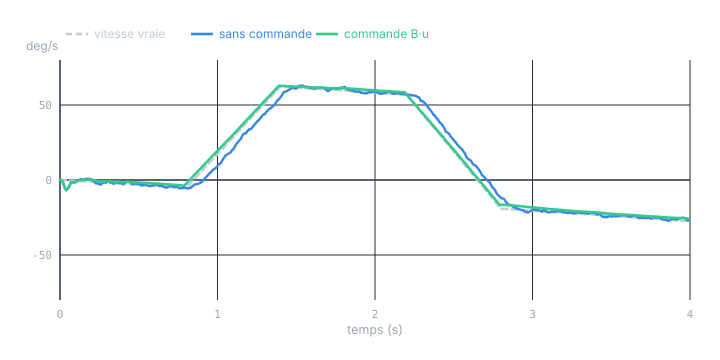

Chapitre 11 · Application
Vitesse depuis un inclinomètre : construire le modèle
Objectifs du chapitre
- Voir pourquoi la dérivation numérique brute d'un angle bruité est inexploitable.
- Poser le modèle 1er ordre (vitesse quasi-constante) : état, F, H, Q, R.
- Passer au 2e ordre (accélération quasi-constante) et savoir quand c'est nécessaire.
- Intégrer le retard du capteur (dynamique interne et temps de transport) par augmentation d'état.
- Injecter la commande connue en anticipation (B·u).
1. Pourquoi pas une simple dérivée ?
La tentation première est de calculer la vitesse par différence finie : ω ≈ (θₖ − θₖ₋₁) / dt. C'est un désastre. La dérivation amplifie le bruit : si l'angle porte un bruit d'écart-type σθ, la différence finie porte un bruit d'écart-type σθ·√2 / dt. Avec σθ = 0,4° et dt = 10 ms, cela fait déjà ≈ 57 °/s de bruit — largement plus que le signal utile. Diviser par un petit dt multiplie le bruit d'autant.

La différence de fond : la dérivée brute ne regarde que deux points et les croit aveuglément. Le filtre de Kalman intègre tout l'historique via son état, pondéré par les incertitudes. Il ne dérive pas l'angle — il estime une vitesse compatible avec la suite des angles et avec un modèle de mouvement. C'est un lissage et une dérivation optimaux et simultanés.
2. Le modèle 1er ordre : vitesse quasi-constante
Le modèle le plus simple et le plus utile. On suppose que, sur un pas, la vitesse angulaire est presque constante — les variations sont traitées comme du bruit de process. L'état réunit l'angle et la vitesse :
La cinématique θ̇ = ω, ω̇ = 0 (aux perturbations près) se discrétise sur un pas dt en :
H = [1, 0] traduit « le capteur ne voit que l'angle, pas la vitesse ». C'est exactement le cas position-vitesse du cours théorique (chapitre 5), transposé à l'angulaire. La vitesse sera reconstruite par le couplage θ–ω que F installe dans P.
2.1 Le bruit de mesure R
R = [σθ²] est un scalaire : la variance du bruit d'angle de l'inclinomètre. On la lit sur la fiche technique (densité de bruit, ou résolution/répétabilité) ou on la mesure capteur immobile, en calculant la variance empirique de quelques milliers d'échantillons. C'est un fait mesurable, pas un réglage.
2.2 Le bruit de process Q
Q exprime « à quel point la vitesse peut varier entre deux pas ». Le modèle standard suppose une accélération angulaire aléatoire d'écart-type σα, constante sur le pas. Elle agit sur l'état par le vecteur g = [dt²/2, dt]ᵀ (une accélération déplace l'angle de ½α·dt² et la vitesse de α·dt), d'où Q = σα² · g·gᵀ :
Les termes croisés ne sont pas décoratifs : une accélération non modélisée affecte ensemble angle et vitesse, leur bruit est donc corrélé. σα est le vrai curseur de réglage — on y revient au chapitre 12. Physiquement, on le choisit de l'ordre de la plus forte accélération angulaire que le système peut subir sans qu'on la commande.
// SCL — un pas du filtre 1er ordre [θ, ω], mesure d'angle seule.
// Types LREAL (double). dt fixe imposé par l'OB cyclique.
// --- Prédiction : x⁻ = F·x , P⁻ = F·P·Fᵀ + Q ---
th_p := #th + #om * #dt; // θ⁻ = θ + ω·dt
om_p := #om; // ω⁻ = ω
// P⁻ = F·P·Fᵀ + Q (développé à la main pour 2×2, sans boucle matricielle)
p00_p := #P00 + #dt*(#P10 + #P01) + #dt*#dt*#P11 + #q00;
p01_p := #P01 + #dt*#P11 + #q01;
p10_p := #P10 + #dt*#P11 + #q01; // symétrique de p01
p11_p := #P11 + #q11;
// --- Correction avec la mesure d'angle z (H = [1 0], R scalaire) ---
S := p00_p + #R; // S = H·P⁻·Hᵀ + R
k0 := p00_p / S; // gain sur θ
k1 := p10_p / S; // gain sur ω
y := #z - th_p; // innovation
#th := th_p + k0 * y;
#om := om_p + k1 * y; // ← la vitesse estimée, jamais mesurée
// P = (I - K·H)·P⁻ (forme de Joseph au chapitre 12)
#P00 := (1.0 - k0) * p00_p;
#P01 := (1.0 - k0) * p01_p;
#P10 := p10_p - k1 * p00_p;
#P11 := p11_p - k1 * p01_p;Aucune inversion de matrice : la mesure est scalaire, donc S l'est aussi et le « gain » est une simple division. C'est ce qui rend ce filtre si léger sur automate — un point sur lequel le chapitre 12 s'appuiera lourdement.
3. Le modèle 2e ordre : accélération quasi-constante
Le modèle 1er ordre suppose la vitesse constante. Dès que la vitesse varie durablement — une rampe d'accélération, un démarrage, un freinage commandé — cette hypothèse est fausse pendant toute la variation, et le filtre traîne : son estimation de vitesse reste en retard sur la réalité tant que dure l'accélération. On le voit nettement sur la figure suivante.

On enrichit alors l'état d'une composante d'accélération angulaire :
Le bruit de process porte maintenant sur le jerk (dérivée de l'accélération), d'écart-type σj, via g = [dt³/6, dt²/2, dt]ᵀ et Q = σj² · g·gᵀ. On mesure toujours le seul angle : le filtre reconstruit vitesse et accélération à partir de la seule série des angles.
Ne prenez pas systématiquement l'ordre 2 « pour être sûr ». Chaque état supplémentaire ajoute de la variance à l'estimation et rend le réglage plus délicat. Règle pratique : ordre 1 si les variations de vitesse sont brèves ou rares (le Q les absorbe) ; ordre 2 si le système subit des accélérations soutenues qu'on veut suivre sans retard (mât qui bascule, plateau qui accélère longuement). Au chapitre 12, le test de cohérence tranchera objectivement.
4. Inclure le retard du capteur
Un inclinomètre réel n'est jamais instantané. Son signal est retardé par rapport à l'angle physique, pour deux raisons de natures différentes qu'il faut distinguer et modéliser séparément.
4.1 Le retard dynamique (filtrage interne)
Beaucoup d'inclinomètres (à pendule amorti, à fluide, ou MEMS avec filtre anti-repliement) se comportent comme un passe-bas du 1er ordre : leur sortie θ_m suit l'angle vrai θ avec une constante de temps τ :
On lit τ depuis la bande passante annoncée (τ ≈ 1 / (2π·f_c)). La bonne méthode : augmenter l'état de la sortie capteur θ_m, et déclarer que c'est elle qu'on mesure. Pour l'ordre 1 :
Le filtre estime alors l'angle vrai θ (et sa vitesse), tout en sachant que le capteur ne lui montre qu'une version retardée θ_m. Il peut ainsi « devancer » le capteur et récupérer la phase perdue.

Un retard non modélisé n'est pas qu'une question de précision : dans une boucle fermée (la vitesse estimée sert à réguler), un retard de phase ampute la marge de phase et peut faire osciller, voire diverger l'asservissement. C'est souvent la vraie raison qui impose de modéliser le retard, bien plus que l'erreur en boucle ouverte.
4.2 Le retard de transport (temps mort)
Autre nature : un temps mort pur de d pas — communication bus (Profinet, IO-Link, CAN), échantillonnage asynchrone, traitement du capteur. La mesure d'aujourd'hui reflète l'angle d'il y a d cycles : zₖ = θₖ₋d + bruit. On le modélise par un registre à décalage dans l'état — on empile les d derniers angles et on observe le plus ancien :
F propage la dynamique sur (θ, ω) et décale les anciens angles d'un cran à chaque pas. Le coût est d états de plus — acceptable pour un petit temps mort. Pour un grand retard, on préfère la rétrodiction (corriger l'état passé mémorisé puis re-propager), plus subtile, hors de portée de ce chapitre.
En pratique, les deux retards coexistent : une constante de temps τ (dynamique interne) plus quelques pas de temps mort bus. On modélise celui qui domine, ou les deux si l'application est sensible à la phase. Mesurer le retard total : injecter un échelon d'angle connu et chronométrer la réponse du capteur.
5. Inclure la commande (anticipation)
Si l'on pilote le mouvement — un moteur qui incline le plateau, un vérin qui lève le mât — on connaît la commande envoyée. C'est de l'information gratuite et certaine. Supposons qu'on commande une accélération angulaire u = α_cmd (couple/courant moteur connu). On l'injecte dans la prédiction de l'ordre 1 par :
L'effet est spectaculaire : le mouvement commandé n'est plus une « surprise » à absorber par Q. On peut donc réduire Q (il ne couvre plus que la perturbation non commandée), ce qui rend le filtre à la fois plus précis et moins en retard.

u doit être l'accélération réellement exécutée, pas seulement demandée. La dynamique de l'actionneur, la saturation, un couple de charge non modélisé font que la commande n'est pas suivie parfaitement. Deux parades : modéliser la dynamique de l'actionneur (encore de l'augmentation d'état), ou garder un Q suffisant pour couvrir l'écart commande↔exécution. Une commande fausse injectée avec un Q trop petit fait diverger le filtre avec assurance.
Exercices
Exercice 1 — Dimensionner Q à partir de la physique
Un plateau peut subir des accélérations angulaires non commandées allant jusqu'à ≈ 50 °/s² (chocs, vent). On échantillonne à dt = 5 ms. Donnez un point de départ raisonnable pour σα et la forme de Q du modèle 1er ordre.
Voir la solution
On prend σα de l'ordre de l'accélération maximale plausible, soit σα ≈ 50 °/s². Avec dt = 0,005 :
Soit Q ≈ [[3,9·10⁻⁷, 1,6·10⁻⁴],[1,6·10⁻⁴, 0,0625]] (unités deg² et deg²/s²). C'est un point de départ : le chapitre 12 l'ajustera par le test de cohérence jusqu'à ce que l'innovation soit blanche. L'ordre de grandeur, lui, vient de la physique.
Exercice 2 — Choisir la structure d'état
Pour chacun de ces cas, dites quel état choisir : (a) une nacelle stabilisée qui oscille lentement, capteur rapide ; (b) un mât qu'on relève par un vérin commandé, avec un inclinomètre à fluide amorti (bande passante 2 Hz) ; (c) un plateau dont la vitesse fait de longues rampes.
Voir la solution
- (a) Ordre 1 [θ, ω] suffit : oscillations lentes, pas d'accélération soutenue, capteur sans retard notable.
- (b) Ordre 1 avec commande B·u (le vérin est piloté) et augmentation du retard θ_m : τ ≈ 1/(2π·2) ≈ 80 ms, non négligeable. État [θ, ω, θ_m].
- (c) Ordre 2 [θ, ω, α] : les longues rampes de vitesse sont des accélérations soutenues qu'un ordre 1 suivrait en retard.
Le bon modèle épouse la physique dominante — ni trop pauvre (il traîne ou biaise), ni trop riche (il bruite et se règle mal).
Récapitulatif
- La dérivée brute Δθ/Δt amplifie le bruit par √2/dt : inexploitable. Le filtre infère la vitesse, il ne la dérive pas.
- Ordre 1 (vitesse quasi-constante) : x = [θ, ω], F = [[1,dt],[0,1]], H = [1,0], Q = σα²·g gᵀ avec g = [dt²/2, dt]ᵀ, R = σθ².
- Ordre 2 (accélération quasi-constante) : x = [θ, ω, α] ; nécessaire pour suivre des accélérations soutenues sans retard, au prix de plus de variance.
- Retard : dynamique interne → augmenter de θ_m (lag 1er ordre τ) ; temps mort de transport → registre à décalage. Un retard non modélisé ampute la marge de phase en boucle fermée.
- Commande : x⁻ = F·x + B·u avec B = [dt²/2, dt]ᵀ ; le mouvement commandé n'est plus une surprise → Q plus petit, filtre plus précis et anticipateur. Mais u = commande exécutée.